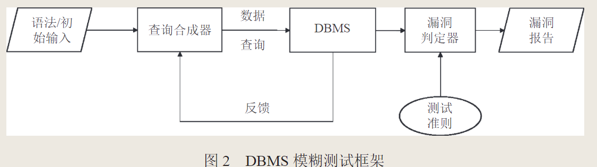
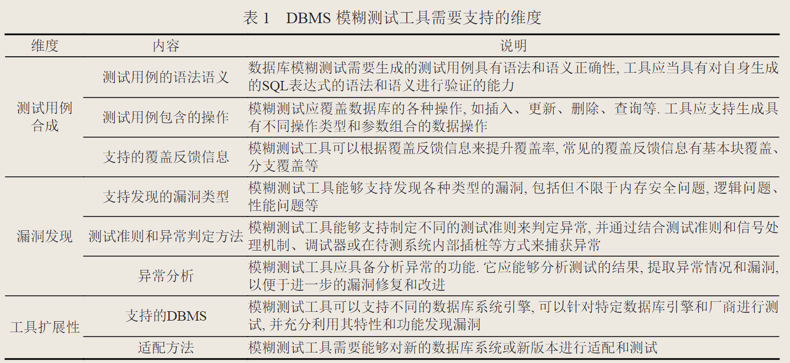
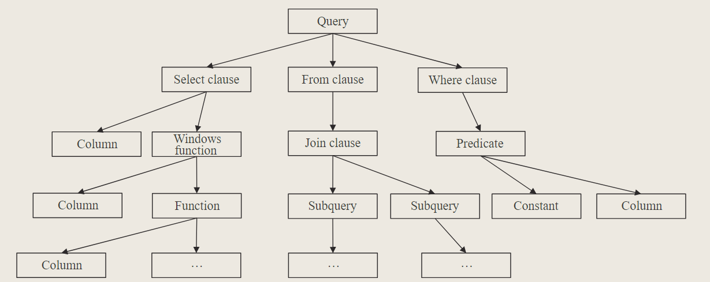
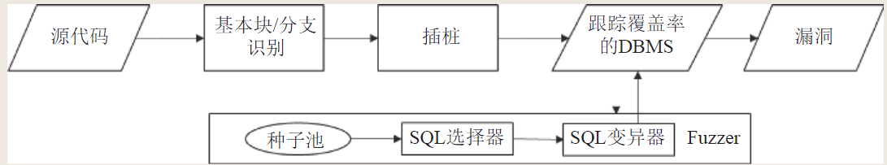

数据库管理系统模糊测试综述阅读笔记
梁杰,吴志镛,符景洲,朱娟,姜宇,孙家广.数据库管理系统模糊测试技术研究综述.软件学报,,():1-25
背景知识
模糊测试
- 定义：通过产生大量随机输入来对程序进行测试，一旦程序出现异常行为或状态，就认为程序存在问题
- 模糊测试的输入称为种子，如何产生种子是其最重要的问题。模糊测试产生种子可以分为基于生成和基于变异。前者利用目标程序的语法进行建模，依靠模型来产生符合格式的输入；后者一般需要初始种子，然后采用遗传算法对种子进变异，尽可能地探索程序的状态，通过种子执行时的覆盖信息来对决定是否对种子加以保留并进一步变异。
数据库管理系统
- 执行过程：解析 → 验证 → 优化 → 执行（以MySQL为例）
- 解析：通过词法分析和语法分析，将语句拆成Token，从而构建语法树
- 验证：通过语义分析，判断执行命令的语义和逻辑是否符合要求，比如需要查询的表格是否存在，用户是否有权限访问等
- 优化：根据索引或者元数据的相关信息生成执行的多种方案，依据最小成本（I/O成本和CPU成本）选择合适的执行方案
- 执行：调用对应的存储引擎（MyIsam、Innodb等）来执行方案
需求
- 功能性测试
- 查询功能测试 - 测试各种操作的正确性，例如数据定义、插入、更新等
- 数据完整性测试 - 确保数据存储、更新和删除的正确性，验证数据完整性约束的有效性
- 事务处理测试 - 验证DBMS对事物的支持和正确处理
- 性能测试
- 评估DBMS的性能、负载容量和可伸缩性
- 安全性测试
- 主要包括安全漏洞测试、数据保护测试和访问控制测试
- 可用性测试 - 验证DBMS在各种条件下的可用性和容错能力
基本框架
论文中提供的基本框架如下图所示：
总体思路：查询合成器持续合成SQL语句以生成数据和查询，并输入到对应的数据库管理系统，针对测试需求定义好测试准则，漏洞判定器对DBMS行为是否异常进行判定，最终给出漏洞报告。
挑战
- 输入需要满足语法和语义的正确性，因此模糊测试工具需要分析上下文的依赖关系。
- 需要得到DBMS的测试覆盖率。DBMS涉及多种查询语言、事务管理、并发控制、安全机制等，导致测试空间庞大，因此覆盖所有可能的路径和组合非常困难。其次，DBMS还会根据命令对其进行优化后生成多种方案，再从中选择成本低的执行方案，因此覆盖所有的查询和优化组合也非常困难。
- 需要应对DBMS在不同特性要求上的挑战。模糊测试工具一般通过AddressSanitizer（ASAN）来检测内存安全问题，通过差分测试、蜕变测试来检测逻辑问题，通过性能回归来检测性能问题。
- DBMS为了保证其服务的稳定性，会隐式处理异常，因此进行模糊测试时采用以下方法来捕捉异常：在操作系统层面使用信号处理器、使用调试器运行待测程序、在DBMS中插入代理器等。
- 由于DBMS内部状态复杂，漏洞对应的现场和触发条件难以保存。因此模糊测试工具会周期性重置数据库状态并记录所有被执行的测试用例。
- 不同的DBMS除了通用的SQL语言规范，还有自己的语法和方言，因此一般通过自动化分析数据库管理系统的文法，及人工辅助添加文法处理逻辑来进行不同数据库管理系统的适配。
模糊测试工具需要支持的维度
相比于通用的fuzzer，DBMS模糊测试工具有几个需要重点注意的问题：首先是生成的输入必须具有语法正确性和语义正确性，否则DBMS在解析、验证阶段就会中止该输入的进一步执行；其次，模糊测试工具需要能够判断DBMS是否出现异常，要有测试准测和判定方法；第三，DBMS种类繁多，不同类型的数据库语法要求、接口设定也不尽相同，因此需要适配不同类型的DBMS接口。
不同漏洞类型对应的测试准则
典型的DBMS漏洞类型包括逻辑漏洞、崩溃漏洞以及性能漏洞。针对不同类型的漏洞，不同的模糊测试工具提供了不同的测试准则。
针对崩溃漏洞
- 模糊测试工具的基本工作流程是根据语法语义要求生成测试用例、执行输入、检测崩溃。由于第二和第三个步骤是模糊测试工具共有的功能，因此对于DBMS模糊测试工具而言，其技术难点主要在于如何生成语法语义正确的测试用例。主要方法有两种：通过语法建模来生成，或者通过SQL语句变异来生成。
语法建模根据文法建立抽象语法树，然后查询当前数据库中已有的数据，根据语法树的规则将数据填充到语法树的节点中，从而生成符合条件的SQL语句。SQL语句变异其基本思路是：代码覆盖分支数能够反映模糊测试工具的有效性，因此如果某个输入能够触发更多的代码分支覆盖，那么认为其是一个有意义的输入。同时为了保证语法语义的正确性，可以设计中间表示，将每个SQL转为中间表示后再对结构节点或者数据节点进行变异（类似于构建语法树+变异）。
针对逻辑漏洞
- 逻辑漏洞指DBMS没有实现预定的功能，比如查询返回预定的结果，插入预定的数据等。检测该漏洞需要在实验前确定预定结果，通过比较预定结果和实验结果来判定是否存在逻辑漏洞。
- 常见的针对逻辑漏洞的测试准测是差分测试和蜕变测试。前者是通过与另一个相似的DBMS中获取预期结果，后者则是通过构造一组具有蜕变关系的测试用例，分别执行这一组中的原始测试用例和衍生测试用例，判断两个测试用例的执行结果是否符合预期的蜕变关系。
- 另外，由于DBMS的功能特性繁多，因此此前设计的模糊测试工具也有提出自己的测试准则，有意去针对某一类型的功能来进行模糊测试。例如SQLancer就提出了PQS、NoREC和TLP。
PQS合成一个包含预定义行的查询，如果查询结果不包含这一行，则认为存在逻辑漏洞NoREC将一个能够被优化的查询转为一个不能被优化的查询，如果优化前后的查询结果不一致，则认为存在逻辑漏洞TLP将一个查询拆分为多个子查询，如果子查询结果的并集不等于原查询，则认为存在逻辑漏洞
针对性能漏洞
- 性能漏洞通常指DBMS不能在给定时间内返回执行结果。但是给定时间是一个比较主观的概念，很难有统一的标准。针对这一类型的漏洞，通常是比较同一DBMS不同版本的执行时间，来判断是否存在性能漏洞；或者是生成具有相同语义的不同语句来进行测试，如果执行时间差距过大，则认为也存在性能漏洞。
模糊测试不同阶段的关键技术
模糊测试的主要流程包括：生成测试用例、执行输入、判断异常。对于DBMS而言，生成测试用例即合成符合语法语义正确性的SQL语句，涉及SQL表达式合成技术，可以通过建模或者变异输入的形式来生成新的输入，而变异的方向则依赖于代码覆盖率，因此还涉及代码覆盖追踪技术。最后，判断DBMS的异常则依赖于测试准则构建技术。
“这 3 个关键技术相互依赖, 共同构建起了一个完整的数据库管理系统模糊测试工具。SQL 表达式合成技术提供了多样化的输入生成能力，代码覆盖追踪技术确保了测试覆盖范围的有效性，而测试准则构建技术帮助我们判定测试结果的合法性。” [引自原文]
SQL表达式合成技术
基于生成
模糊测试工具将DBMS的文法转换为对应的抽象语法树树（AST树，类似汇编），然后提取数据库中的元数据（比如表结构、列数据类型等），将其填充到节点中，最终将树转化为对应的SQL语句。下图是论文构建的一个查询语句的抽象语法树示例，可以看到每个整个树是一个完整的SQL语句，由select子句、from子句和where子句构成，每一个子句还可以递归地由新的子句构成，通过往节点中填充数据，模糊测试工具就能生成大量的符合语法语义正确性的SQL语句。
采用基于生成的技术的模糊测试工具有SQLsmith、RAGS、Apollo、Amoeba、SQLancer等。值得注意的是，为了提高模糊测试的效率和准确率，不同的工具对SQL语句的生成和执行进行了进一步的优化。例如SQLsmith在执行测试用例的时候，是以事务的形式，验证DBMS正常运行后会回滚，防止当前查询对后续测试的影响。Apollo会为每个子句设定一个概率，为概率高的子句合成更多的测试用例等。
基于变异
- 基于变异的测试用例生成是传统模糊测试的常用方法，但是在进行DBMS的测试时，会出现大量经过变异得到的测试用例无法通过语法语义检查的结果，因此不能简单地对初始种子进行变异。
- DBMS模糊测试工具常用的变异方法是通过建模来对SQL表达式的结构或者数据进行变异。模糊测试工具可以构建AST树或者某种中间形式（例如IR），对语法树或者中间形式中的结构节点进行替换（比如将where语句替换成order by语句），或者变异数据节点，来确保生成的SQL语句能够通过语法语义检查。
- 采用基于变异的SQL生成的测试工具有Squirrel、Ratel、DynSQL、SQLRight和Griffin等。
代码追踪覆盖技术
“代码覆盖追踪技术的核心思想是通过监控和分析数据库管理系统的代码执行路径和分支覆盖情况，引导测试用例的生成和变异，以增加对未被覆盖的代码的探索能力。” [引自原文]
上图引自原文。可以看到代码追踪覆盖做技术主要包括源码基本块识别、插桩以及覆盖率跟踪等主要环节。模糊测试工具根据测试用例对代码的覆盖情况，修改选择策略和变异策略，指导生成能够覆盖更多基本块和分支的测试用例。
测试准则构建技术
“测试准则构建技术的核心思想是根据数据库管理系统的特性和潜在漏洞的特点，构建相应的规则，同时指导测试用例的生成和变异. 这些准则可以包括关于查询结果、函数调用、边界条件、异常情况等方面的规则, 以确保生成的测试用例能够更全面地覆盖潜在漏洞的场景和情况。”[引自原文]
- 基于传统方式构建测试准则
- 传统模糊测试方式主要通过监视待测程序是否崩溃。比如检测系统信号、插入ASAN等。
- 基于差分测试构建测试准则
- 将同一个测试用例交由不同的DBMS来执行，通过比较执行结果来判断是否存在漏洞
- 基于蜕变测试构建测试准则
- 蜕变测试的难点在于构造一组具有蜕变关系的测试用例，分别执行这一组中的原始测试用例和衍生测试用例，判断两个测试用例的执行结果是否符合预期的蜕变关系。
总结
- 相比于其他类型的程序，DBMS在执行输入前会判断测试用例是否符合语法语义的要求，因此DBMS的fuzzer需要构建具有正确性的测试用例。基于生成的SQL合成技术虽然能够得到更多符合语法语义的测试用例，但是相应的代码分支覆盖率较低；基于变异的SQL合成技术虽然可以覆盖更多的分支，但是会导致生成的测试用例出现语义错误。
- 由于DBMS的分支众多，基本块数目庞大，因此在分析测试用例的代码覆盖率时，需要进一步优化以往的代码覆盖技术。并且原文中的实验证明，目前的fuzzer更多地涉及数据维护相关的组件，但是其他部分比如事务、用户管理等组件没有得到充分的测试。
- 考虑到DBMS的状态复杂，有时候出现崩溃的原因不是直接由当前的测试用例引起，有可能与很久之前的执行相关，因此复现漏洞存在难度。
- DBMS种类繁多，且不同的DBMS具有不同的特征和语法，因此单一模糊测试工具的通用性较低。
- 之前研究的DBMS的fuzzer主要针对关系型数据库，非关系型数据库如Redis的研究空缺还很大。